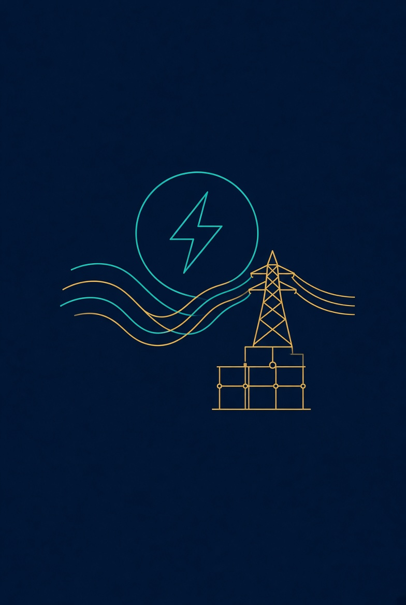
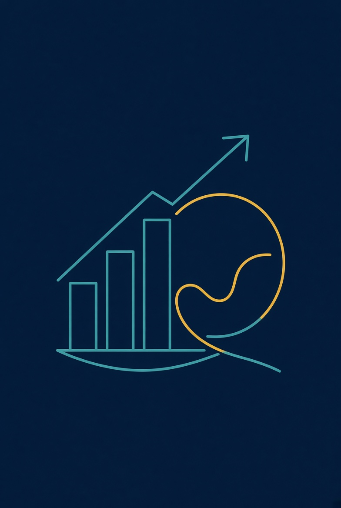
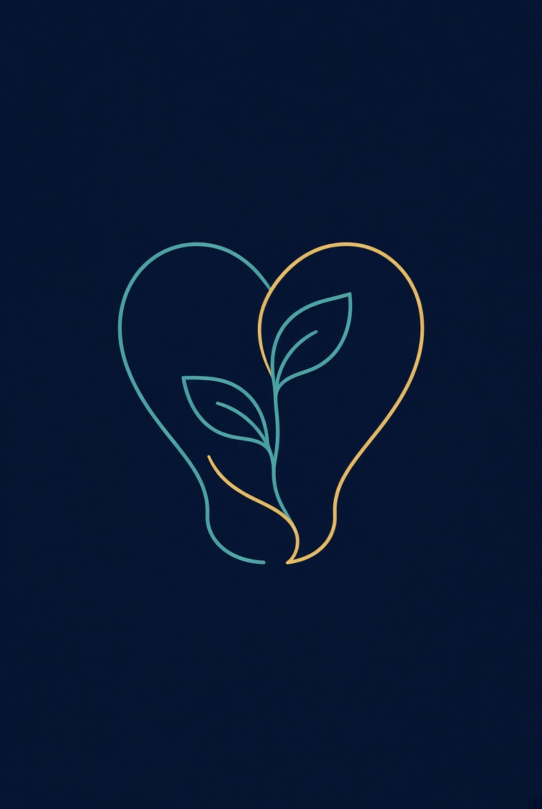
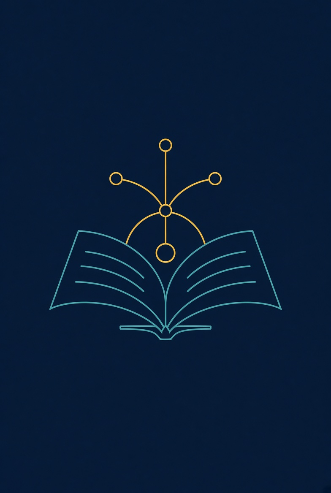
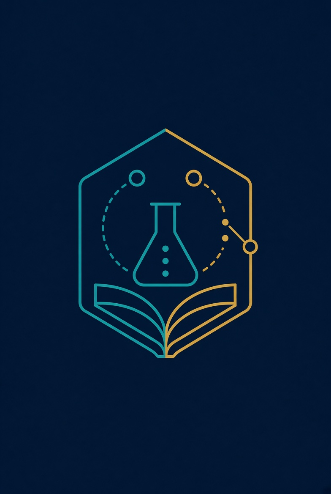
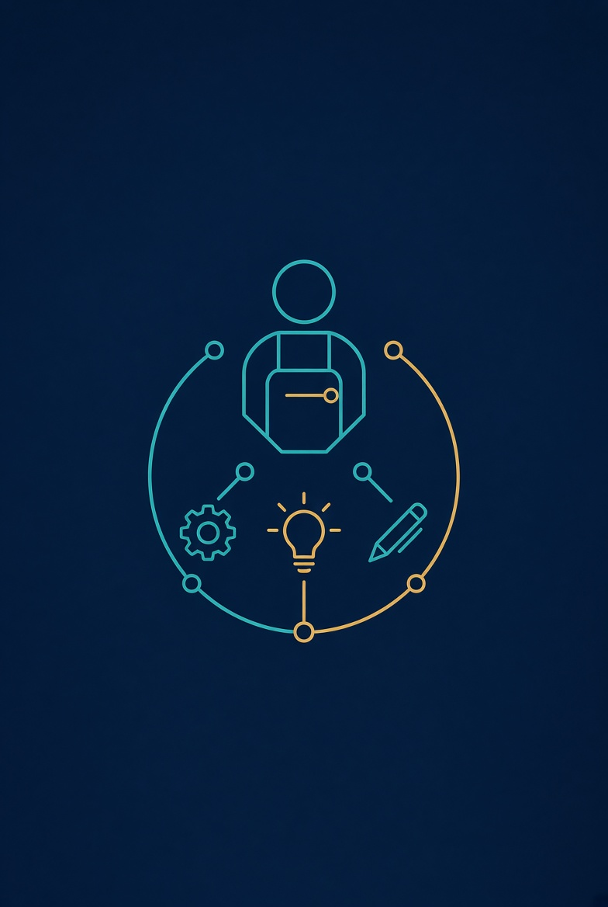
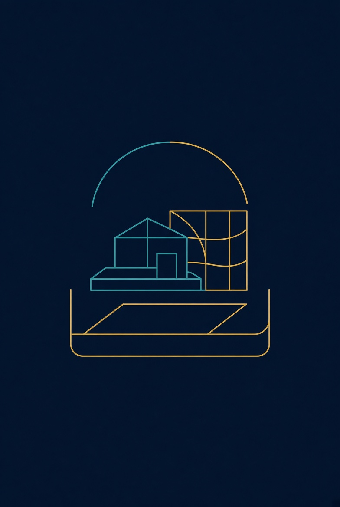

3+ Research & Delivery Lab · +Industries +Data +AI
Minden vállalatnak saját Software/AI kertje.
A 3+ RESEARCH & DELIVERY LAB +Industries +Data +AI kezdeményezés demokratizálja a vállalati szoftverekkel kapcsolatos tudást.
Kiáltvány
A vállalati szoftverek jövője
Hisszük, hogy a vállalati szoftverek jövője egy olyan világ, ahol minden vállalat saját Software/AI kertet működtet (vagy ha úgy tetszik, farmot vagy öntödét) — megbízható, igény szerint elérhető képességet arra, hogy szoftvermegoldásokat és AI-ügynököket tervezzen, építsen és fejlesszen tovább minden érintett üzleti kihívásaira: munkatársak, ügyfelek, partnerek és közösségek számára egyaránt.
Agentforce-powered Factories
A Salesforce számára — más vállalati szoftveróriásokhoz hasonlóan — ez Agentforce-alapú gyárakat (Agentforce-powered Factories) jelent, amelyek minden felhasználót személyre szabott értékesítési, ügyfélszolgálati, termelési, szállítási és személyes fejlődést támogató ügynökökkel látnak el. Ez nem egyszerűen gépi tanulásra épülő szoftveres automatizálás — hanem demokratizált piaci és iparági intelligencia, valamint felerősített emberi potenciál.
Ember + gép, szándékkal.
Három forgatókönyv
Három forgatókönyv. Csak az egyik épít vállalkozást.
A szélek hangosak. A közép — ahol a racionális együttműködést keressük — csendesebb. Ott dolgozunk.
- Szél
Kiborg
Teljesen beleállni
A technológia helyettesít. Az ember alkalmazkodik a gép tempójához. Gyors, látványos — és könnyen elveszíti a vállalkozás saját szándékát.
- Közép
Együttélés
Ember + gép, szándékkal
Nem várjuk a vihart, és nem olvadunk bele. Komplementer képességeket építünk: az ember dönt, a gép skáláz, a rendszer tanul.
- Szél
Utolsó Jedi
Eltávolítani a technológiát
Átmenteni az értékeket, amíg „elvonul a vihar”. Tiszteletreméltó reflex — de a first-mover előny és a ballast tudás közben felhalmozódik.
A legtöbben itt vagyunk: keressük az ember és az AI racionális együttműködését — és felkészülünk arra, ami jön. Nem kiborg. Nem remete. Vállalkozó.
Vertikumok
Első lépésünk: négy vertikum
Első lépésünk e jövő felé egyértelmű: négy vertikummal — Energia és közművek, Pénzügy, Egészségügy és Oktatás — a +INDUSTRIES +DATA +AI Research and Delivery LAB-unk, a Forward Deployed Salesforce Solution Engineer megközelítéssel kombinálva, olyan ügyfelekkel lép partnerségre, akik maguk is ügyfeleik sikeréért élnek. Közösen újragondoljuk és újjáélesztjük a mai adat-, alkalmazás- és tehetségerőforrásokat, felszabadítva az ügyféltudásban, a folyamatokban és a szervezeti képességekben rejlő, csapdába zárt értéket (trapped value). Ezen alapok újjáépítésével felkészítjük a szakembereket, a szervezeteket és a közösségeket arra, hogy tudatosan, magabiztosan és gyorsan lépjenek be ebbe a forradalmi átalakulásba.

Energia és közművek
Pénzügy
Egészségügy
Oktatás
Megközelítés
Hogyan dolgozunk
Négy gondolat, amely ügyfeleinkkel és partnereinkkel végzett Salesforce-, adat- és AI-munkánk mögött áll.
-
Kiaknázatlan érték
A meglévő Salesforce-beruházásokban gyakran csapdába zárt érték rejlik: adatsilókban, kihasználatlan alkalmazásfunkciókban, pilot fázisban ragadt AI-ban, alacsony felhasználói elfogadottságban és soha nem lokalizált iparági folyamatokban. Feltárjuk, hol van, és hogyan szabadítható fel.
-
A Forward Deployed Engineer
A Forward Deployed Salesforce Solution Engineer az ügyfél csapatába beágyazva dolgozik, és összeköti a stratégiát, a technológiát és a működést. A szerep kiegészíti a tanácsadókat és az account csapatokat, nem helyettesíti őket, és gyorsabb ciklusokat, magasabb elfogadottságot eredményez.
-
A Lab négy pillére

Módszertan – iparági playbookok és implementációs készletek
Kompetencia – képzés, szimuláció és készségvalidálás
Demó és modellarchitektúra – élő demók, sandbox-validálás és referencia-megoldásmodellek- Minőségbiztosítás – QA, valamint RFP/RFI-validálás
-
Érték ügyfeleknek és partnereknek
Ügyfeleinknek: a meglévő beruházásokban rejlő érték felszabadítása, gyorsabb értékteremtés, magasabb elfogadottság és iparághoz illeszkedő megoldások.
Implementációs partnereknek és külső FDE-csapatoknak: közös pilotok, FDE-kapacitás, módszertani készletek, kompetenciaprogramok, demóeszközök és QA-támogatás.
Technológiai fókusz: adat + AI + iparág – Data Cloud, Agentforce és Salesforce Industry Clouds.
Közös alkotás
Alkotótárs a változásban
A +INDUSTRIES +DATA +AI LAB Energia-Egészségügy-Pénzügy-Oktatás laborunkban az ügyfél soha nem csupán ügyfél — hanem alkotótárs a változásban. Alkossuk meg együtt a vállalati szoftverek jövőjét, alkossuk meg együtt vállalkozásaink jövőjét!
Izgalmas újdonságok következnek.
Rólunk
Az iMotionről
Az iMotion Informatikai Kft. budapesti székhelyű tanácsadó cég. Munkánk a Salesforce, a CRM, az adat és AI, valamint a Forward Deployed Engineering területét fedi le, a +INDUSTRIES +DATA +AI Research & Delivery Lab-bel együtt.
Ha nem adod meg az AI-nak a kontextust, akkor te vagy a kontextus.
- Cégnév
- iMotion Informatikai Kft.
- Székhely
- 1112 Budapest, Kányakapu köz 6. B. ép., Magyarország
- Ügyvezető
- Bellák Zoltán
Kapcsolat
Lépjen kapcsolatba velünk
Salesforce-, CRM-, adat- és AI-tanácsadással vagy a Lab-bel kapcsolatos kérdéseivel kérjük, írjon nekünk e-mailt.
Székhely
iMotion Informatikai Kft.1112 Budapest, Kányakapu köz 6. B. ép.
Magyarország